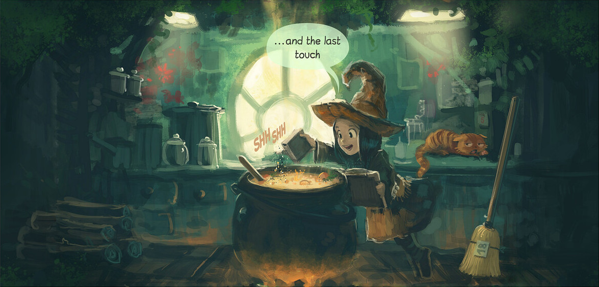
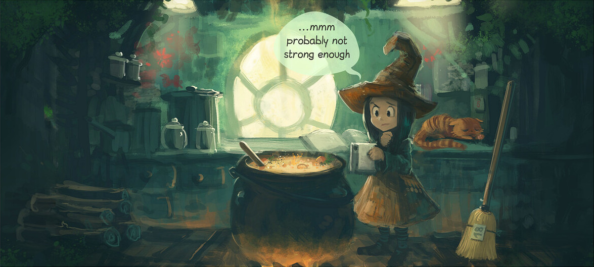
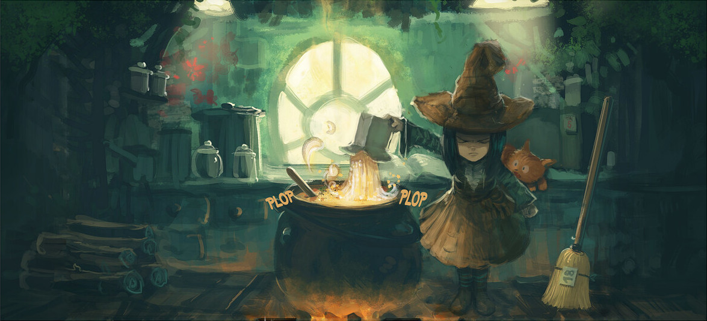
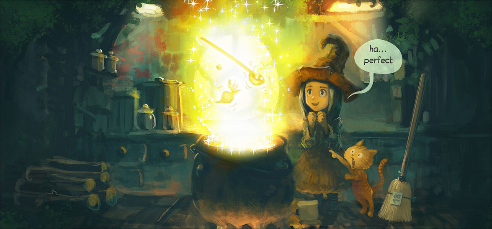
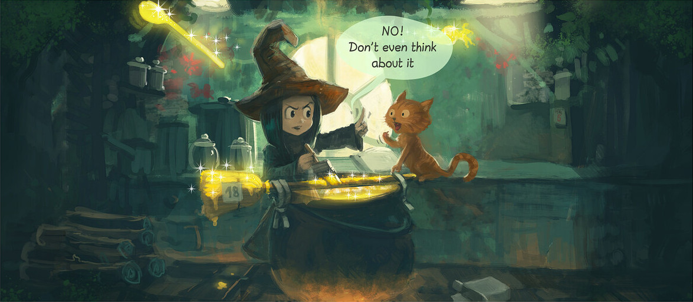
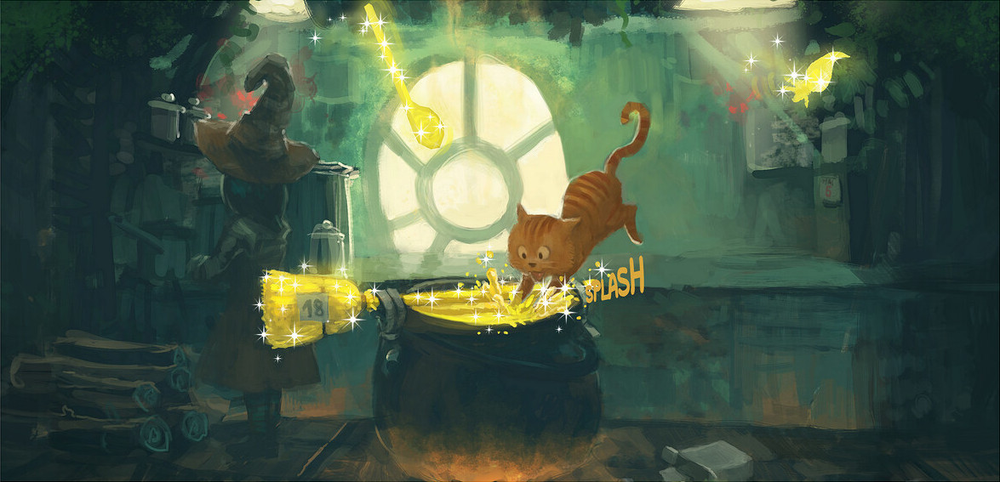
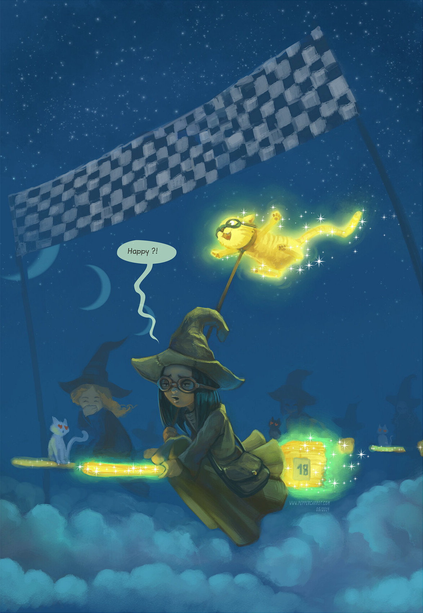

A witch is in her house. She is brewing a magic potion. Her cat is watching her.
Light shines through the oval window. The witch wonders whether her potion is strong enough. The cat closed his eyes.
The witch is dropping the entire package of ingredients into the potion. This startles her cat. His eyes spring wide open.
The witch is pleased with her work, her cat is astonished. A tuber and a ladle are floating above the potion.
The witch is applying the potion to her broom. The cat wants to try the potion but the witch isn't allowing it.
While the witch is distracted her cat is jumping into the potion.
The witch is finishing a flying broom race. Her cat is floating behind her on a leash. All the cats of the other witches are looking at him with heart eyes.